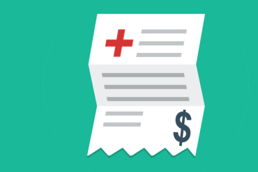
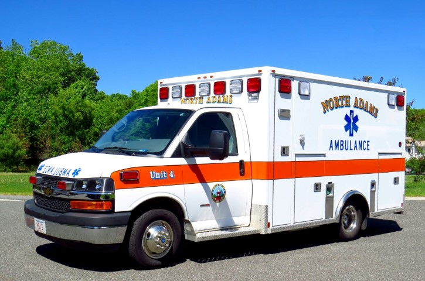

Myths About the ER
Top 10
#1 ER's can't provide the same treatment as a primary care doctor or specialist.
- People come to the ER for conveneint service.
- But they can't provide the same level of care.
- ER physicians have to be efficient and prioritize their time.
- Specialists often have years of medical experience to help diagnose your aliment.
- Specialists have access to resources ER physicians don't have or the time to utilize.

#2 You should wait to see your pediatrician if your child is seriously sick.
- ER physicians receive more trianing.
- They also treat more than 21 million children each year.
- This means your child can recieve quicker care and get better sooner.

#3 There's first come first serve in the ER.
- Patients that are sicker or in worse condition will be tended to first.
- They don't go in order of arrival.
- The average ER stay is about 4-5 hours.
- You may obtain tests that would normally take months to receive.
#4 Emergency care is the most expensive type of health care.
- Its open 24 hours of the day and 365 days of the year.
- No one is ever turned away.
- 2.4 trillion dollars are spent on health care but on 47.3 billion is spent in the ER (2% of overall spending).

#5 Going to the ER is free if you can't pay.
- While its true out of pocket costs can be almost as low as zero, the average cost of an ER visit is $1233.
#6 Ambulance rides are free.
- In some places they used to be, but that's not the case anymore.
- Prices have skyrocketed.

#7 ER's are crowded because people abuse the system by seeking care for minor problems.
- Less than 8% of patients are classified as non-emergent.

#8 Patient satisfacion is the number 1 prioity.
- The ER is designed to identify and treat time sensitive conditions.
- Patients frequently visit the ER to receive antibiotics for the common cold or a CAT scan of the head.
- You can demand tests in any ER but it might not be in your best interest to receive them.
#9 You shouldn't let a doctor put you in observation.
- They're specifically designed patient care areas, staffed with emergency physicians, trianed to rapidly treat and diagnose conditions such as pneumonia, asthma, and chest pain.
- You generally stay in observation for 16 to 24 hours.
#10 The ER is a safe place for nurses.
- Nurses are often attacked.
- A study in 2007 said more than 3000 nurses had been spit on, pushed, or shoved, scratched, or kicked by patients.
- About 1/4 of nurses said this happened more than 20 times over the last 3 years.
- Many of these incidents are results of drugs, alcohol, and or mental illnesses.